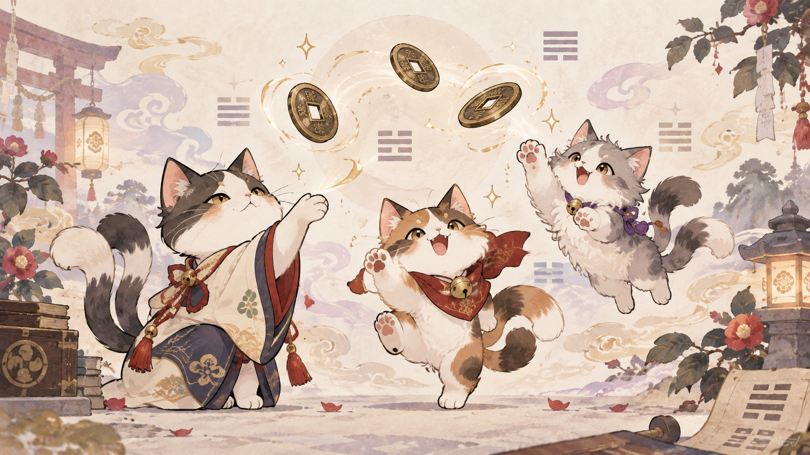

卦を作る（六爻を立てる）
易占では、陰と陽を表す6本の線を重ねて「卦（か）」を作ります。この1本1本の線が「爻（こう）」です。
線は、一番下から順に決めます。1回目の結果が初爻（一番下）、2回目が二爻。その後も下から上へ積み上げ、6回目が上爻（一番上）になります。
6本すべて決まると、今回の占いに使う卦が完成します。
- 陽爻（ようこう）：つながった線
- 陰爻（いんこう）：中央が分かれた線
- 上爻6回目
- 五爻5回目
- 四爻4回目
- 三爻3回目
- 二爻2回目
- 初爻1回目
ここから作る
下のボタンを1回押すと、猫又が三枚の銭を6回投げ、卦を作ってくれます。

六爻
- ボタンを押すと、ここに六爻が現れます。